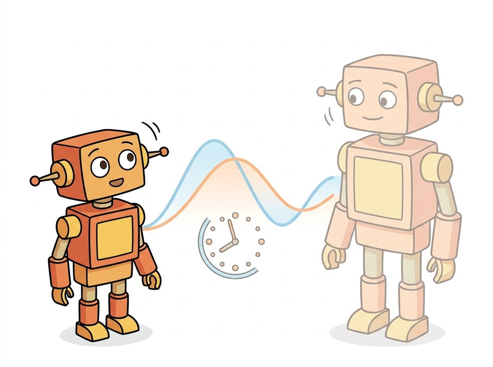

"My teacher and I are the same network, separated only by time. She is a slow, smoothed average of everything I used to be, and my one job is to agree with her. Somehow, in the act of agreeing with my own past, I learned where the objects are."
A Student Network Distilling From Its Own Echo
Two ideas closed the gap between self-supervision and supervised pretraining. Self-distillation trains a student network to match a teacher that is a slow moving average of the student itself, learning without labels and without negatives; DINO's version produces attention maps that segment foreground objects with no segmentation supervision at all. Masked image modeling hides most of an image and trains the network to reconstruct the missing parts, importing into vision the masked-prediction recipe that built large language models. MAE makes this cheap by encoding only the visible patches with a large encoder and reconstructing with a small decoder. Between them, these two families produce the backbones that anchor modern computer vision, and they set up the foundation-model landscape of Section 25.6.
The contrastive methods of Section 25.2 needed many negatives, and the research frontier there hinted that negatives might be unnecessary. This section makes good on that hint twice. First we build self-distillation, where a network learns by matching a smoothed copy of itself, and see why DINO's attention maps light up on objects. Then we build masked image modeling, where the supervision is reconstructing hidden content, and see why MAE's asymmetric design made it both effective and efficient. Both use the Vision Transformer of Chapter 22 as their backbone, and both exploit its patch structure. By the end you will understand the two pretraining objectives that, combined, produce DINOv2, the general-purpose backbone of Section 25.6.
1. Self-Distillation Without Labels Intermediate
Self-distillation borrows the teacher-student framing from knowledge distillation but removes the external teacher. Knowledge distillation, in its usual form, trains a small "student" network to imitate the output distribution of a larger, already-trained "teacher" network, transferring what the teacher learned into a cheaper model (it is a model-compression technique we return to in Section 28.1). Self-distillation keeps the imitation idea but drops the separate pretrained teacher: the teacher is a copy of the student whose weights are an exponential moving average of the student's. This is the momentum encoder from Section 25.2, promoted from a source of consistent negatives to the entire mechanism. The student sees one augmented view of an image and the teacher sees another; the student is trained to make its output distribution match the teacher's. There are no negatives and no labels: the only signal is "your two views of this image should produce the same soft prediction". The illustration below pictures this teacher as the student's own slower echo.

This immediately raises the collapse problem. If both networks simply output the same constant vector for every image, the matching loss is zero and nothing has been learned. DINO (Caron et al., 2021) prevents collapse with two operations applied to the teacher's output. Centering subtracts a running mean from the teacher's logits, which stops any single dimension from dominating. Sharpening uses a low temperature in the teacher's softmax, which makes its output confident and peaked. Centering alone would push toward a uniform distribution (collapse to uniform); sharpening alone would push toward a one-hot spike (collapse to a constant class). Applied together they balance, and the only stable solution is one where the network genuinely distinguishes images.
The sharpening also creates the learning pressure. Because the teacher's temperature is lower than the student's, the teacher's target is more confident than the student's current guess, so "match the teacher" always asks the student to commit a little further than it has. That pressure drives improvement, rather than letting both sides settle into agreement on a vague output. Figure 25.3.1 shows the asymmetric flow.
The code below implements the DINO loss, including the centering buffer update. The stop-gradient on the teacher is enforced by detach; the teacher weights are updated separately by the same momentum_update from Section 25.2.
import torch
import torch.nn.functional as F
class DINOLoss:
def __init__(self, out_dim, teacher_temp=0.04, student_temp=0.1, center_m=0.9):
self.center = torch.zeros(1, out_dim) # running center subtracted from teacher
self.tt, self.st, self.cm = teacher_temp, student_temp, center_m
def __call__(self, student_out, teacher_out):
# Student: ordinary softmax at higher temperature.
student = F.log_softmax(student_out / self.st, dim=-1)
# Teacher: center (anti-collapse) then sharpen (low temp), and stop gradient.
teacher = F.softmax((teacher_out - self.center) / self.tt, dim=-1).detach()
loss = -(teacher * student).sum(dim=-1).mean() # cross-entropy to teacher
# Update the center as an EMA of this batch's teacher outputs.
self.center = self.cm * self.center + (1 - self.cm) * teacher_out.mean(0, keepdim=True)
return loss
torch.manual_seed(0)
loss_fn = DINOLoss(out_dim=2048)
s, t = torch.randn(16, 2048), torch.randn(16, 2048) # student & teacher projections
print("DINO loss:", round(loss_fn(s, t).item(), 4))
# DINO loss: 7.6... (high for random outputs; drops as student learns to match teacher)0.04) to sharpen and subtracts the running center; detach() is the stop-gradient that keeps the teacher a fixed target within the step.DINO's most celebrated result is emergent: the self-attention of the trained ViT's class token, with no segmentation labels anywhere in training, attends almost exactly to the foreground object. You can threshold those attention maps to get a usable object segmentation for free. This is the strongest evidence in the chapter that a good self-supervised objective does not just memorize textures; it discovers the structure of scenes. The descriptor the book has been learning to learn since Chapter 10 now localizes objects on its own.
Collapse is the central danger of any negative-free method, and DINO's defense is an equilibrium, not a barrier. Sharpening (low teacher temperature) pushes the output toward a confident peak; centering pushes it away from any one dimension dominating. Each alone causes a different collapse; together they cancel at the only fixed point where the network must actually tell images apart. The momentum teacher provides the stability that lets this equilibrium converge. Remove any one of the three (centering, sharpening, momentum) and DINO collapses, which is why all three appear in every reimplementation.
DINO's emergent attention is one of the most striking demos in this book, and it is a short build. Load a pretrained DINO ViT, run one image through it, extract the class token's self-attention over the patch grid, reshape that attention into a heatmap, and overlay it on the image: the foreground object lights up, with no segmentation labels anywhere. A beginner version (around 30 minutes) produces a single attention overlay for one photo; an advanced extension thresholds the heatmap into a binary mask and runs it on a webcam stream so the highlighted object tracks live. Because the segmentation here is a free side effect of the self-supervised objective rather than a trained head, the result makes the section's central claim visible and undeniable, and a short clip of it is a memorable portfolio piece that shows you understand what a good representation discovers on its own.
2. Masked Image Modeling: Predict the Hidden Patches Intermediate
The second family takes a completely different route to free supervision, one borrowed directly from language models. In masked language modeling, a model is shown a sentence with some words hidden and trained to predict them; the supervision is the missing words, which require no labeling because they are simply removed from the input. Masked image modeling does the same with patches: hide a fraction of the image's patches and train the network to reconstruct them from the visible ones. The patch tokenization of Chapter 22 is what makes this natural; an image is already a sequence of patch tokens, so masking patches is exactly analogous to masking words.
The difficulty is that images are far more redundant than text. A masked word usually has few plausible completions, but a masked image patch can often be guessed by copying a neighbor, so masking a small fraction teaches little. MAE (He et al., 2022) made two decisions that turned this from a weak signal into a strong one. The first decision is about how much to hide: mask aggressively, removing seventy-five percent of patches, so reconstruction genuinely requires understanding the whole scene rather than local interpolation from a visible neighbor.
The second decision is about who processes what. MAE uses an asymmetric encoder-decoder. A large ViT encoder sees only the twenty-five percent of patches that remain visible; because that is a quarter of the usual sequence, the encoder stays cheap to run even though it is big. A small, shallow decoder then reconstructs the full image, taking the encoded visible patches together with learnable mask tokens placed at the hidden positions. Figure 25.3.2 lays out the pipeline.
The reconstruction loss is mean squared error between the predicted and true pixel values of the masked patches only,
where $\mathcal{M}$ is the set of masked patch indices, $x_p$ is the true patch, and $\hat{x}_p$ is the decoder's prediction. Computing the loss only on masked patches (not the visible ones) is deliberate: predicting patches you were shown is trivial and dilutes the signal. The masking and loss are short to express.
import torch
def random_masking(x, mask_ratio=0.75):
"""x: (B, N, D) patch tokens. Keep a random (1-mask_ratio) subset; return kept + mask."""
B, N, D = x.shape
keep = int(N * (1 - mask_ratio))
noise = torch.rand(B, N, device=x.device) # random score per patch
order = noise.argsort(dim=1) # shuffle patch indices
keep_idx = order[:, :keep] # indices of visible patches
x_visible = torch.gather(x, 1, keep_idx.unsqueeze(-1).expand(-1, -1, D))
mask = torch.ones(B, N, device=x.device)
mask.scatter_(1, keep_idx, 0) # 1 where masked, 0 where visible
return x_visible, mask, order
def mae_loss(pred, target, mask):
"""MSE on masked patches only. pred, target: (B, N, patch_dim); mask: (B, N)."""
per_patch = ((pred - target) ** 2).mean(dim=-1) # (B, N) MSE per patch
return (per_patch * mask).sum() / mask.sum() # average over MASKED patches only
x = torch.randn(2, 196, 768) # 2 images, 14x14 patches, dim 768
x_vis, mask, _ = random_masking(x)
print("visible patches:", x_vis.shape[1], "of", x.shape[1], "| masked:", int(mask[0].sum()))
# visible patches: 49 of 196 | masked: 147random_masking keeps a random 25 percent of patches so only 49 of 196 reach the encoder; mae_loss multiplies by the mask so error on the visible patches contributes nothing, exactly the design choice that focuses the signal.The asymmetry is the efficiency win: because the heavy encoder sees only forty-nine of the one hundred ninety-six patches, MAE pretraining is several times faster than processing the full image, while the representations it learns are strong under fine-tuning. The decoder can be small for a complementary reason: it is discarded after pretraining, since only the encoder is kept as the downstream feature extractor. It exists solely to turn the encoder's output into a pixel prediction so the reconstruction loss has something to grade, not to learn a good representation itself, so spending capacity on it would be wasted; a shallow decoder is enough to define the training signal while keeping that signal pointed at the encoder. The contrast with DINO is worth holding onto: DINO produces features that are excellent under a linear probe and even segment objects, while MAE produces features that shine after fine-tuning. The two objectives push representations in complementary directions, which is exactly why DINOv2 in Section 25.6 combines them.
MAE's reconstructions, viewed directly, look like impressionist smudges: blurry, low-frequency, often missing fine texture. This is not a failure. The model is graded on pixel MSE, which is dominated by getting the broad structure right, so it spends its capacity on layout and shape rather than crisp edges. The blurry reconstructions are a feature: they show the model learned what a region is rather than memorizing its exact pixels, which is precisely what makes the representation transfer. This same MSE-prefers-blur effect is why pixel-space generation needs the perceptual and adversarial losses you will meet in Chapter 37.
Pretraining either method from scratch costs many GPU-days; in practice you load the published weights. Both DINO and MAE backbones are one call away through torch.hub or timm:
import torch, timm
# DINOv2 ViT-S/14, self-distilled + masked, features ready for a frozen probe:
dino = torch.hub.load("facebookresearch/dinov2", "dinov2_vits14")
# An MAE-pretrained ViT-B/16, set up for fine-tuning (classifier head attached):
mae = timm.create_model("vit_base_patch16_224.mae", pretrained=True, num_classes=1000)torch.hub.load fetches the self-distilled dinov2_vits14 weights ready for a frozen probe, while timm.create_model attaches an MAE-pretrained ViT-B/16 with a 1000-way head for fine-tuning. These calls stand in for the centering loss of Code Fragment 1 and the masking pipeline of Code Fragment 2 plus their multi-day training runs.These two lines replace the masking pipeline, the projection heads, the momentum teacher, the multi-crop augmentation, and the multi-day training run, fetching weights that were trained on tens of millions to hundreds of millions of images. The library handles the exact architecture, the matching preprocessing, and the head wiring. The from-scratch losses above exist so you can read those checkpoints' training code and know what every term means.
3. Choosing Between the Two Advanced
DINO and MAE are not interchangeable, and knowing which to reach for matters in practice. The contrast is worth memorizing as a one-line rule: DINO for frozen, MAE for fine-tune. DINO-style self-distillation produces features that are immediately useful without any task training: high linear-probe accuracy, strong k-nearest-neighbor retrieval, and emergent segmentation, because the objective explicitly organizes the embedding space by image identity. MAE-style masked modeling produces features that are a superb initialization for fine-tuning but weaker under a frozen linear probe, because reconstruction does not directly cluster images by semantics. So if you will freeze the backbone and use its features directly (retrieval, clustering, few-shot, dense correspondence), prefer a DINO-family model; if you will fine-tune end to end on a labeled downstream task, MAE is an excellent starting point. The practical example below is a real version of this decision.
Who: a radiology AI team at a hospital network, 2023, building tools on a large archive of unlabeled chest images with only a few thousand expert-annotated cases per condition. Situation: they needed two things: a retrieval system that finds visually similar prior scans for a radiologist, and a set of fine-tuned classifiers for specific findings. Problem: they assumed one self-supervised backbone would serve both, and they started with an MAE-pretrained ViT because masked modeling was the most cited recipe that year. The fine-tuned classifiers were excellent, but the retrieval system, which used the frozen MAE features through cosine similarity, returned poorly matched scans. Decision: rather than force one backbone to do both, they pretrained a second backbone with DINO-style self-distillation on the same unlabeled archive and used its frozen features for retrieval, keeping the MAE backbone for the fine-tuned classifiers. Result: retrieval precision rose sharply because DINO's objective had organized the embedding space by image content, while the fine-tuned MAE classifiers stayed best-in-class for the labeled findings. Lesson: the choice of self-supervised objective is a choice about how you will use the features. Frozen-feature use cases want the clustering that self-distillation provides; fine-tuning use cases want the strong initialization that masked modeling provides. The modern answer, as Section 25.6 shows, is to combine both objectives in one model.
MAE reconstructs raw pixels, which the Fun Fact above noted wastes capacity on imperceptible detail. The 2023 to 2024 JEPA line from Meta (I-JEPA for images, V-JEPA for video) argues the prediction should happen in representation space: predict the encoded features of the masked region, not its pixels, so the model is never penalized for failing to hallucinate exact texture. This removes the decoder's pull toward low-level detail and, the authors argue, learns more abstract, more semantic features at lower cost. iBOT and the data-curated DINOv2 (which fuses masked modeling with self-distillation) are the other strands of this convergence. Whether pixel reconstruction, feature prediction, or joint distillation wins is an open question of 2025 and 2026, and the JEPA direction connects directly to the predictive world models you will meet in Chapter 26; we return to all of this in Section 25.6.
4. The Objectives, Formally Advanced
The intuition above is enough to use both methods, but the precise objectives reward a careful read: every design choice in DINO and MAE is visible in a single line of math, and the anti-collapse equilibrium in particular only becomes unambiguous once it is written down. This subsection states both objectives in full, then ties them to the broader family of self-supervised recipes.
The DINO objective
DINO (Caron et al., 2021) couples a student network $g_{\theta_s}$ and a teacher network $g_{\theta_t}$ that share the same architecture but not the same weights. Each maps an input view to a $K$-dimensional vector, which a temperature-scaled softmax turns into a distribution over $K$ "prototype" coordinates. The training signal is the cross-entropy of the teacher distribution into the student distribution, summed over matched views $x$ (teacher) and $x'$ (student) of the same image,
Here $P_t$ is the teacher's target distribution and $P_s$ the student's prediction; minimizing this cross-entropy pulls the student's distribution onto the teacher's. The student distribution is an ordinary softmax at student temperature $\tau_s$,
where $g_{\theta_s}(x)^{(i)}$ is the $i$-th of the $K$ output coordinates and $\tau_s$ controls how peaked the student's distribution is. The teacher distribution is the same softmax with two extra operations baked in: a subtracted center $c$ and a smaller temperature $\tau_t$,
The center $c$ is a running mean of the teacher's raw outputs over the batch (batch size $B$), updated as an exponential moving average with rate $m$, and subtracted from every teacher logit before the softmax. The teacher temperature $\tau_t < \tau_s$ is what sharpens: a smaller temperature divides the logits by a smaller number, exaggerating their differences and driving the teacher's distribution toward a single peak.
These two operations are the entire anti-collapse mechanism, and they act in direct opposition. Sharpening (small $\tau_t$) pushes the teacher toward a one-hot distribution; if it acted alone the network would collapse onto a single output coordinate for every image, the peaked-output collapse. Centering subtracts whatever coordinate the teacher currently favors on average, which pushes the distribution back toward uniform; if it acted alone the network would collapse to the constant uniform distribution, learning nothing. Because one force pulls toward a peak and the other toward uniform, they cancel at an interior equilibrium where the only way to keep the loss low is for the teacher to assign genuinely different distributions to genuinely different images. The teacher itself is never trained by gradients; its weights track the student as an exponential moving average,
with momentum $\lambda$ close to one, so the teacher is the slow, smoothed echo of the student described in this section's epigraph. No negative pairs appear anywhere: unlike the contrastive objectives of Section 25.2, DINO never contrasts an image against others in the batch, which is why the centering-plus-sharpening equilibrium has to do the anti-collapse work that negatives did before.
Given an image, augmentations producing views $x$ (for the teacher) and $x'$ (for the student), networks $g_{\theta_s}$ and $g_{\theta_t}$, temperatures $\tau_s$ and $\tau_t < \tau_s$, center $c$, center rate $m$, and teacher momentum $\lambda$:
- Forward both branches. Compute student logits $g_{\theta_s}(x')$ and teacher logits $g_{\theta_t}(x)$. (In practice multiple global and local crops are used; each student crop is matched to each teacher crop.)
- Student distribution. Form $P_s(x') = \mathrm{softmax}\big(g_{\theta_s}(x') / \tau_s\big)$.
- Teacher distribution (center then sharpen). Subtract the center and divide by the small temperature: $P_t(x) = \mathrm{softmax}\big((g_{\theta_t}(x) - c) / \tau_t\big)$. Apply a stop-gradient so no gradient flows into the teacher.
- Loss. Compute the cross-entropy $-\sum P_t(x) \log P_s(x')$ and back-propagate into $\theta_s$ only.
- Update the center. $c \leftarrow m\,c + (1 - m)\,\frac{1}{B}\sum_b g_{\theta_t}(x_b)$, the EMA of this batch's raw teacher logits.
- Update the teacher. $\theta_t \leftarrow \lambda\,\theta_t + (1 - \lambda)\,\theta_s$. The teacher never sees a gradient; it only tracks the student.
The MAE objective
MAE (He et al., 2022) replaces the matching game with reconstruction, and its design is built around one efficiency observation. After patchifying the image into tokens, MAE masks a random subset at a high ratio (seventy-five percent), then makes the encoder and decoder deliberately asymmetric: the encoder, a full ViT, processes only the visible quarter of patches and never sees a mask token, while a lightweight decoder reconstructs the image from the encoded visible tokens together with shared, learnable mask tokens inserted at the hidden positions. The reconstruction loss is mean squared error in pixel space, computed on the masked patches only,
where $\mathcal{M}$ is the set of masked patch indices, $x_p$ the ground-truth patch and $\hat{x}_p$ the decoder's prediction; in practice the per-patch targets are normalized (each patch standardized by its own mean and variance), which sharpens the local contrast the loss rewards. The two ideas compound into the headline efficiency win: a high mask ratio shortens every sequence, and because the heavy encoder skips the masked patches entirely it runs on only a quarter of the tokens, giving roughly a threefold speedup over encoding the full image while still learning a strong representation.
Given an image, patch size, mask ratio $r = 0.75$, a ViT encoder, and a shallow decoder with a shared learnable mask token:
- Patchify. Split the image into $N$ non-overlapping patches and embed each as a token (add positional embeddings).
- Random masking. Sample a random permutation of the $N$ tokens and keep the first $\lceil N(1-r) \rceil$ as visible; the remaining $\lfloor N r \rfloor$ are masked. Record which positions were masked.
- Encode visible only. Pass just the visible tokens through the full ViT encoder. No mask tokens enter the encoder, so it operates on roughly a quarter of the sequence.
- Re-insert mask tokens. Build the full-length sequence: place each encoded visible token at its original position and fill every masked position with the shared learnable mask token, then add positional embeddings so the decoder knows where each token belongs.
- Decode. Pass the full sequence through the shallow decoder, which predicts pixel values for every patch.
- Loss. Compute the MSE $\frac{1}{|\mathcal{M}|}\sum_{p \in \mathcal{M}} \|\hat{x}_p - x_p\|_2^2$ on the masked patches only (with per-patch normalized targets), and back-propagate. After pretraining the decoder is discarded and only the encoder is kept.
The PyTorch fragment below isolates the DINO anti-collapse machinery from the formal objective: the centering-then-sharpening of the teacher, the stop-gradient, the cross-entropy, and the two exponential moving averages (the center $c$ and the teacher weights $\theta_t$). It is the precise counterpart of the equations above.
import torch
import torch.nn.functional as F
@torch.no_grad()
def update_teacher(student, teacher, lam=0.996):
# Teacher weights track the student as an EMA: theta_t <- lam*theta_t + (1-lam)*theta_s.
for ps, pt in zip(student.parameters(), teacher.parameters()):
pt.mul_(lam).add_(ps.detach(), alpha=1 - lam)
def dino_step(s_logits, t_logits, center, tau_s=0.1, tau_t=0.04, m=0.9):
# Student: ordinary softmax at the higher temperature tau_s.
p_s = F.log_softmax(s_logits / tau_s, dim=-1)
# Teacher: CENTER (anti-collapse toward uniform) then SHARPEN (low tau_t -> peaked),
# with a stop-gradient so no gradient reaches the teacher.
p_t = F.softmax((t_logits - center) / tau_t, dim=-1).detach()
loss = -(p_t * p_s).sum(dim=-1).mean() # cross-entropy of teacher into student
# Update the center as an EMA of this batch's raw teacher logits (opposes sharpening).
center = m * center + (1 - m) * t_logits.mean(dim=0, keepdim=True)
return loss, centerdino_step centers and sharpens the teacher before the cross-entropy (the detach() is the stop-gradient), and returns the updated center; update_teacher is the EMA on the weights $\theta_t \leftarrow \lambda\theta_t + (1-\lambda)\theta_s$. Remove the centering term and the teacher peaks onto one coordinate; remove the sharpening (set $\tau_t = \tau_s$) and the target drifts toward uniform.Three families, and the predictive successor
DINO and MAE are two of the three families of self-supervised vision learning, alongside the contrastive methods of Section 25.2. Contrastive learning pulls together views of the same image and pushes apart views of different images, using negatives; self-distillation (DINO) matches a student to a smoothed teacher with no negatives, relying on centering and sharpening to avoid collapse; masked reconstruction (MAE) predicts hidden pixels and needs neither negatives nor a teacher. The predictive-embedding successor that unifies the strengths of these lines is JEPA (Chapter 36), the Joint-Embedding Predictive Architecture. Like DINO and BYOL, JEPA learns against a stop-gradient EMA target rather than against negatives; unlike MAE, it does not predict in pixel space but in latent space, predicting the encoded representation of a masked region instead of its raw pixels, which spares the model from hallucinating imperceptible texture. We develop JEPA in full in Section 36.7; for now it is enough to see it as masked modeling moved out of pixel space and onto a stable EMA target, the same target mechanism that makes DINO work.
The exponential-moving-average target is the connective thread across negative-free self-supervision. BYOL and DINO match a student to an EMA teacher of itself; MAE drops the teacher entirely and uses pixel reconstruction as its signal; JEPA keeps the EMA teacher of BYOL and DINO but, like MAE, predicts masked content, doing so in the teacher's latent space rather than in pixels. Reading the four together, the design axes are clear: negatives or not, teacher or not, and (given a teacher) predict pixels or predict embeddings. DINOv2 in Section 25.6 fuses the self-distillation and masked-modeling axes into one backbone.
DINO uses both centering and sharpening on the teacher output. Describe the specific collapse that occurs if you remove centering (sharpening only), and the different collapse that occurs if you remove sharpening (centering only). Then explain, in terms of the two opposing forces, why applying both yields a stable non-collapsed solution. Why must these operations be applied to the teacher rather than the student?
Using the random_masking and mae_loss code with a small ViT encoder-decoder, pretrain MAE on an unlabeled image set at mask ratios of 0.25, 0.50, 0.75, and 0.90, then fine-tune each backbone on a labeled subset and report downstream accuracy. You should find a sweet spot near 0.75. Write one paragraph explaining why both very low and very high mask ratios hurt: what does the model learn when masking is too easy, and what is lost when too little visible context remains.
The section claims DINO features win under a frozen linear probe while MAE features win under fine-tuning. Design an experiment using two pretrained backbones (one DINO, one MAE) from the library shortcut that would test this claim on a single downstream dataset. Specify exactly what you would measure for each backbone under each protocol (probe and fine-tune), what pattern of four numbers would confirm the claim, and what pattern would refute it. Then explain why the objective each method optimizes predicts the pattern you expect.
Write the DINO teacher distribution $P_t(x)^{(i)} = \mathrm{softmax}\big((g_{\theta_t}(x)^{(i)} - c)/\tau_t\big)$ and explain, term by term, how centering and sharpening jointly prevent collapse. Argue what happens to $P_t$ in the limit $\tau_t \to 0$ with $c$ held fixed (sharpening dominant), and what happens as the center $c$ perfectly tracks the teacher's mean output with $\tau_t$ left large (centering dominant). Identify the collapsed distribution in each limit (one-hot peak versus uniform) and explain why an intermediate $\tau_t$ together with the EMA center update $c \leftarrow m\,c + (1-m)\,\frac1B\sum_b g_{\theta_t}(x_b)$ leaves the network at an equilibrium where it must assign different distributions to different images. Why does applying both operations to the teacher rather than the student matter for the stability of that equilibrium?
MAE minimizes pixel-space MSE on masked patches, $\mathcal{L} = \frac{1}{|\mathcal{M}|}\sum_{p\in\mathcal{M}}\|\hat{x}_p - x_p\|_2^2$, while JEPA (Section 36.7) predicts the encoded representation of the masked region against a stop-gradient EMA target. Contrast the two objectives along three axes: (a) what each is penalized for getting wrong (raw texture versus abstract content), and how that explains MAE's blurry, low-frequency reconstructions; (b) why JEPA needs the EMA target and a stop-gradient (the same anti-collapse concern as DINO) whereas MAE needs neither; and (c) what each keeps and discards after pretraining (MAE keeps the encoder and discards the decoder; JEPA has no pixel decoder at all). Conclude with the conditions under which you would expect latent prediction to learn more semantic features at lower cost than pixel reconstruction, and one case where pixel reconstruction is still the right objective.